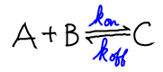
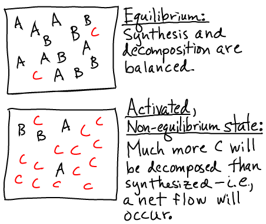

Activated carriers are molecules that can be split (C $\rightarrow$ A + B) to release free energy but only if there is an excess of C relative to its equilibrium concnetration. Key examples are ATP, GTP, NADH, FADH$_2$, and NADPH.
In order for carriers like ATP to be a stable source of free energy, they must stay "activated" when not being used for cellular purposes. In other words, the decomposition/splitting reaction C $\rightarrow$ A + B must be slow compared to cellular timescales and unlikely to occur without catalysis.
For completeness, we emphasize that free energy is stored because the decompostion/synthesis reactions are maintained away from equilibrium - not because bond-breakage is involved. Free energy could equally well be stored in an isomerization "reaction" $A \rightleftharpoons A'$, in which the species populations were maintained away from equilibrium.

where "C" could be any carrier such as ATP. We have used the rates $\kon$ and $\koff$ both because these have the corrects units (see notation) and also to suggest that details of the chemical reaction are not important. Conceptually, we can understanding the equilibrium (or lack of it) in a chemical reaction in the same way as we understand binding.Using a mass-action picture, equilibrium occurs when the number of reactions occuring per second in the forward direction, $\conc{A} \conc{B} \, \kon$, balances the number in the reverse direction, $\conc{C} \, \koff$. That is, equilibrium occurs when \begin{equation} \label{equil} \conc{A} \conc{B} \, \kon = \conc{C} \, \koff , \end{equation} and thus a carrier C is activated whenver the concentrations are such that \begin{equation} \label{activated} \conc{A} \conc{B} \, \kon < \conc{C} \, \koff , \end{equation} meaning that more decomposition than synthesis events occur per second.
Pictorially, the conditions of equilibrium and out-of-equilibrium activation are shown below.
Note that the system could be out of equilibrium in the opposite way - with an excess of "B" (e.g., ADP) relative to its equilibrium value - which would also store free energy.A non-equilibrium condition - one not satisfying \eqref{equil} - stores free energy because there is a tendency for the system to relax back to equilibrium. In the case of a carrier, there is a (strong) tendency for the system to decompose, and this will lead to net flow in one direction in biochemical cycles using the carrier. The tendency is strong because the cell maintains carrier concentrations far from equilibrium.
We treat the reaction $A + B \rightleftharpoons C$, as involving ideal gases of $\na$ A molecules, $\nb$ B molecules, and $\nc$ C molecules. We assume there is a (free) energy change of $\dmu$ for every C molecule synthesized. See the binding discussion for details. These assumptions lead to a total free energy of the system given by \begin{equation} \label{ftot} F(\na, \nb, \nc) = \fidl(\na) + \fidl(\nb) + \fidl(\nc) + \nc \dmu \end{equation}
Based on Eq. \eqref{ftot} and the function $\fidl$, we can solve for the equilibrium point - the most probable state when $N$ values are large - and we find \begin{equation} \label{idlequil} \frac{ \conceq{A} \, \conceq{B} }{ \conceq{C} } = \frac{1}{ \lambda^3 e } e^{ \left. \dmu \right/ k_BT} . \end{equation} Any concentrations that do not satisfy the relation given in Eq. \eqref{idlequil} are out of equilibrium and hence store free energy.
In the case of $\mbox{ADP} + \mbox{Pi} \rightleftharpoons \mbox{ATP}$, as sketched in the figure, the equilibrium point greatly favors low ATP (high ADP) concentration. However, the cell maintains $\conc{ATP}$ much higher than its equilibrium value. Thus a driving force for hydrolysis of ATP is always present, like electricity in wall outlets. Again, ATP is a source of energy only because it is maintained out of equilibrium with its hydrolysis product ADP. If $\conc{ATP}$ were allowed to reach its equlibrium value, no free energy would be stored. From a microscopic point of view, at equilibrium, hydrolysis reactions would exactly be balanced by synthesis; reverse processes would balance forward processes.